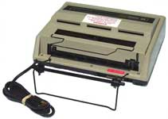

Game Systems
Specializing in replacement parts and accessories for all Consumer based Atari Game Systems and Computers. We have over 5,000+ Atari items, Atari OEM Parts and Accessories in stock. Not all 5,000+ Atari items are listed on this Web site, only the more popular ones. If you can not find the exact Atari item you are looking for Please E-Mail us at: bestelec@bestelec.digitalspacemail8.net
Games
Atari 2600 Warlords is one of the Very Very few Atari 2600 games ever
made that with an extra set of Atari CX30 Paddles, 4 players can play at the same time! Warlords has 23 different Game Variations. You will find that Warlords is a great Party game. The Atari Arcade division made a Arcade Version machine of Atari Warlords.

Accessories
Atari fans can also find a variety of accessories such as cables, controllers, and other user-installed kits that will help them get the most out of their gaming system. Additionally, there are several best upgraded Atari parts available to give your console an extra boost in performance.

Promotions
Lynx Packout (term used in the Atari Lynx Warehouse) Games Special (Lynx Games with Lynx game Owners Manuals or Lynx Posters with Instructions). No Lynx game box, New Atari Lynx games that were to be bundled (put inside a New Lynx console box) with Atari Lynx console package deals (like a new Lynx with 4 games).Basketbrawl, Hydra, Kung Food, Stun Runner $12 ea. California Games $14.95